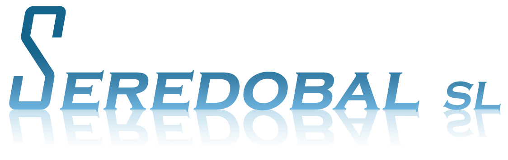
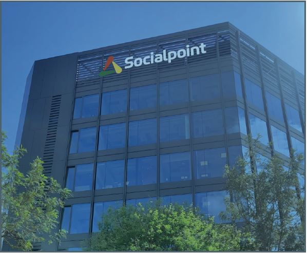
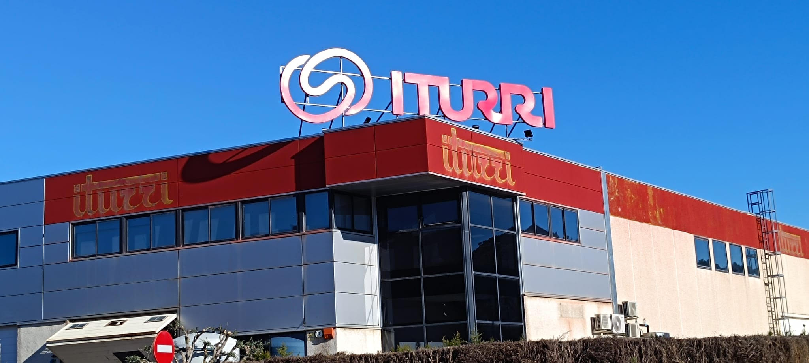
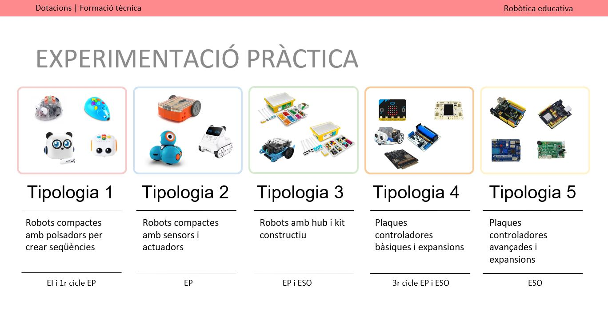
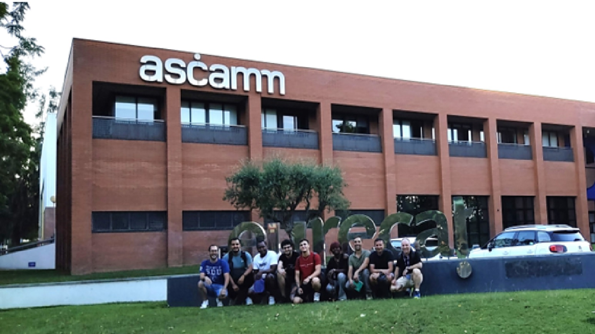
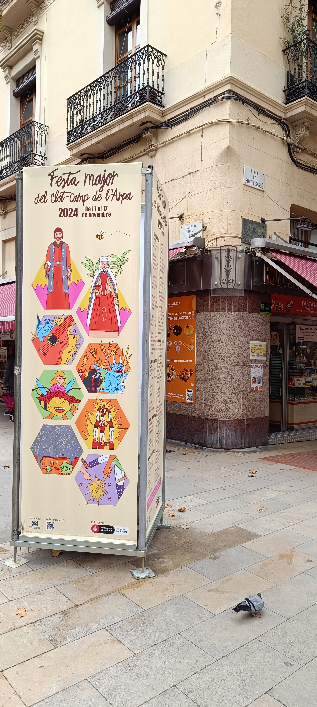
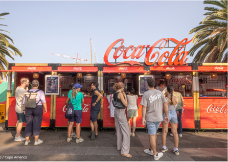

Grandes Rótulos
Formación Educativa
Certificados de Estabilidad
Memoria Técnica
Inicio
Grandes Rótulos
 
Formación Educativa
 
Certificados de Estabilidad

Memoria Técnica

Contacto
Email: seredobal@gmail.com
Teléfono: 644757007